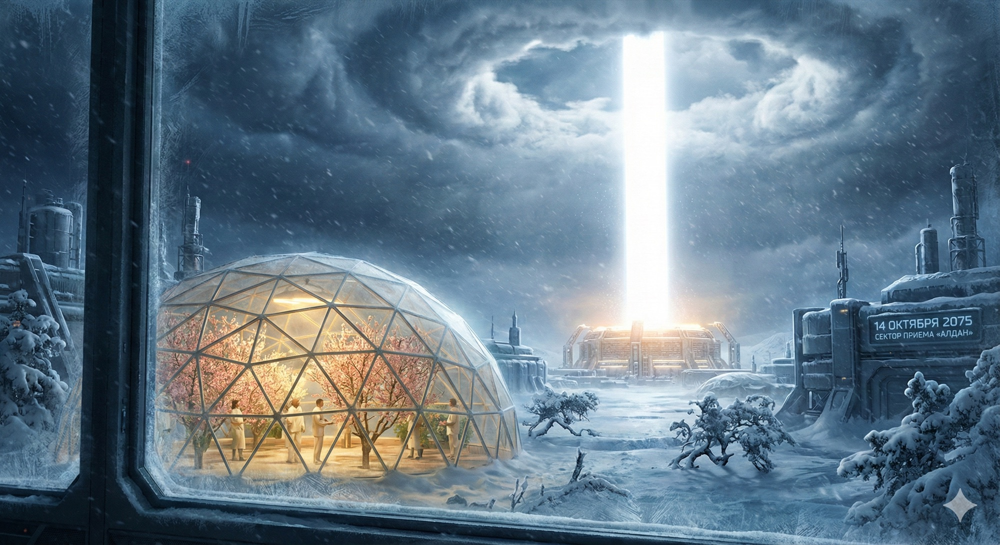

ПРОЛОГ
14 октября 2075 года. Агломерация «Новая Якутия», сектор приёма «Алдан».
Ты спрашиваешь меня, каким был старый мир. Ты читаешь учебники, смотришь голограммы в архивах, видишь графики «Великого Перехода» — но ты не понимаешь. Для тебя энергия — это как воздух. Ты не думаешь о ней, когда вдыхаешь. Тебе не приходит в голову, что за воздух можно получать счета. Что за воздух можно убивать.
Посмотри в окно, Борис. За стеклом купола — минус сорок, буран заметает старые кедры. Но здесь, внутри, цветут персики. Посмотри выше. Видишь? Сквозь свинцовые тучи пробивается идеально ровный, ослепительно белый столб света. Он не дрожит. Он не гаснет. Облака вокруг него не просто расходятся — они мгновенно испаряются, образуя идеальное кольцо чистого неба диаметром в километр. Мы называем это «Оком Бури».

Это Лазерный Коридор. Он бьёт с орбиты, пронзая атмосферу, словно раскалённая игла сквозь масло. Ты живёшь в мире, где слово «экономия» стало архаизмом. Если тебе нужна вода — ты опресняешь океан. Если нужен алюминий — берёшь глину из-под ног и прогоняешь через электролиз. Если погода плохая — подаёшь больше мощности на разгонные лазеры, и тучи над городом исчезают за секунды. Цена киловатта — ноль.
Но я помню время, когда мы считали каждый джоуль. Я помню 2026-й. Мне было тридцать. Я был молодым инженером, только что защитившим диссертацию. Мы жили в состоянии тихой истерики — нам говорили закручивать краны, выключать свет, пересаживаться на электромобили, которые негде было заряжать. Мы называли это «зелёным переходом», но это было похоже на попытку заклеить пробоину в «Титанике» почтовыми марками. Мы дрались за нефть, Боря. Представляешь? Сжигали чёрную жижу, выкачанную из земли, чтобы согреться, и задыхались от дыма. Убивали друг друга за право проложить трубу через чужую границу. Это был мир Дефицита. Мир, где развитие упёрлось в стеклянный потолок. Мы хотели лететь на Марс, но не могли позволить себе топливо. А потом мы посмотрели наверх. И решили совершить самое дерзкое ограбление в истории Вселенной.
Мы решили украсть звезду.
Не думай, что это было красиво. Это не было похоже на те глянцевые картинки, что висят у тебя в школе. Это было грязно. Это было страшно. Это было больно. Когда первые роботы начали разбирать Меркурий, на Земле протестовали те, кто видел в этом насилие над космосом — и они были отчасти правы. Когда мы заливали бетоном сибирскую тайгу и пустыню Гоби, чтобы построить гигантские чаши фотоприёмников, нас называли безумцами. Мы создали «Кремниевый голод» сороковых. Выскребли все запасы кварца и редкоземельных металлов на планете, чтобы создать зеркала и фотоэлементы, способные выдержать удар лазера такой мощности. Но мы построили это.
Знаешь, что сейчас с Меркурием? Если посмотришь в телескоп — не увидишь мёртвой скалы. Увидишь индустриальную планету. Вся поверхность покрыта фабриками, конвейерами, масс-драйверами. Они работают непрерывно, выплёвывая зеркала на орбиту. Мы не разобрали его — мы превратили в машину. Живую, самовоспроизводящуюся фабрику размером с планету. Жестоко? Да. Но посмотри на Землю. Посмотри на Сахару — бывшая пустыня теперь даёт треть всего продовольствия планеты. Вода там опреснённая, пригнанная насосами, питаемыми от «Гелиоса». Посмотри на мусор — его нет. Плазменные мусоросжигатели расщепляют любой хлам на атомы.
И знаешь, что удивительно? Марс. Когда я был молодым, полёт туда был мечтой безумцев. Топливо стоило дороже, чем вся миссия. Теперь там живут двести тысяч человек. Мы накрыли планету магнитным щитом, чтобы солнечный ветер не сдувал атмосферу. Пятнадцать лет — и воздух стал достаточно плотным, чтобы ходить в маске, не в скафандре.

Три года назад появилось первое озеро. Жидкая вода, текучая, под открытым небом. Помню, смотрел трансляцию — учёные стояли на берегу и плакали. Там родились дети. Первое марсианское поколение. Они смотрят на Землю в телескоп и не понимают, почему наше небо синее. Вот что даёт фундамент. Мы перестали бороться за выживание на одной планете — и начали расти.
Мы не построили рай, Боря. Люди остались людьми. У нас всё ещё есть коррупция, преступность. Мы спорим о том, сколько тепла можно сбрасывать в атмосферу, чтобы не перегреть планету нашими бесконечными лазерами. Но не верь тем, кто говорит, что изобилие сделало нас слабыми. Это ложь. Мы сделали то, о чём мечтали тысячи лет: закрыли основание пирамиды Маслоу. Накормили и согрели каждого. И знаешь, что случилось? Человечество не уснуло. Наоборот. Освободившись от крысиных бегов за кусок хлеба, мы ощутили новый, настоящий голод — голод до свершений. Перестали бояться завтрашнего дня и начали его конструировать. У нас теперь есть Фундамент.
Я пишу это письмо, потому что чувствую: моё поколение уходит. Мы — те, кто помнит Тьму. Те, кто строил Мост. Береги его. Не из страха, что мы вернёмся в пещеры — мы люди, выживем везде. Но зачем ползти, если мы научились летать? Этот Луч — наш трамплин.
Есть старая идея, Боря. Говорят, Вселенная создала человечество с одной целью — чтобы познать саму себя. Миллиарды лет она была огромной, слепой и немой. А потом появились мы. Мы — её глаза. Мы — её разум. Пока мы дрались за тепло и еду, у нас не было сил на эту работу. Мы были слишком заняты выживанием. Но этот Луч позволил нам наконец заняться нашим главным делом. Смотреть. Изучать. Понимать.
Отец говорил, ты собираешься на стажировку на Орбитальные Верфи? Там начинают строительство корабля к Юпитеру. На антиматерии. Когда-то мы считали это фантастикой. А теперь — просто вопрос логистики. Всё, что тебе нужно — это энергия. А её у нас теперь — целое Солнце. Лети, Боря. Смотри. Понимай. Покоряй. Это теперь твоя работа.
— Твой дед, Виктор
Виктор Гончаренко, почётный главный инженер «Helios-Eurasia»